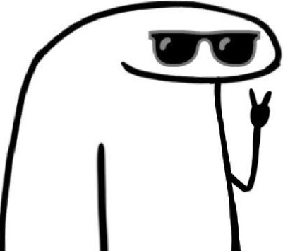

Bom, sou uma garota cheia de sonhos e projetos, mesmo sendo tão insegura e indecisa, tenho alguns que são fixos para mim, como o de ter uma família e seguir na obra são dois deles, mas fora estes dois, tenho mais alguns, vou deixar um pouquinho desta parte sobre mim para vocês.
• Mais alguns de meus projetos e sonhos:
Já pensou eu sendo Psicóloga mesmo sendo louquinha como sou? rs.
